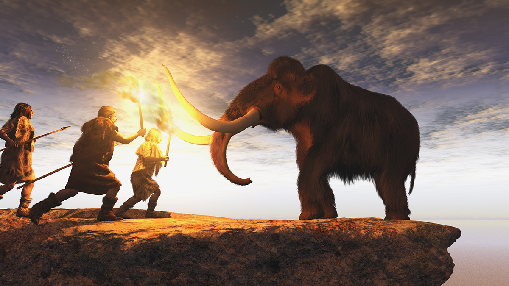

Politics revolves around decision-making for groups of people and involves topics such as the following:
Opposing opinions and alternatives to meet wants and desires regarding these types of issues precede human conflict. Moreover, people acknowledge that for the rules to be upheld, they must come about through a process involving open debate, compromise, and peer cooperation. The illustration of politics is often the process of conflict resolution, in which oppositional or conflictive opinions and competing forces are compromised, reconciled, or addressed by the body politic.
Politics, in simple terms, is the resolution of conflicts by examining resources, cooperation, and compromise.
Conflict resolution is a process, and not all conflicts will achieve resolution. Therefore, politics should be considered a process, not an ending goal. As society adapts to new circumstances and diversifies, there’s often a scarcity of resources. Conflict certainly will develop, and political processes will be used to help people draft, change, and preserve rules under which they agree to live.
Humans are social animals not meant to live alone. Prehistoric humans living in the wild were not kings of the beasts. Lacking speed, strength, and sharp claws or teeth, they were easy prey for the other animals. Humans had to come together as a group to protect themselves in nature.

Also, consider the vulnerability of the young. Human babies are entirely dependent on adults for survival. Humans must come together not just to protect themselves but to protect their young in order to survive as a species. Humans coming together to survive puts them at the top of the food chain on Earth. As humans worked together to survive, communities formed, leading to the development of politics.